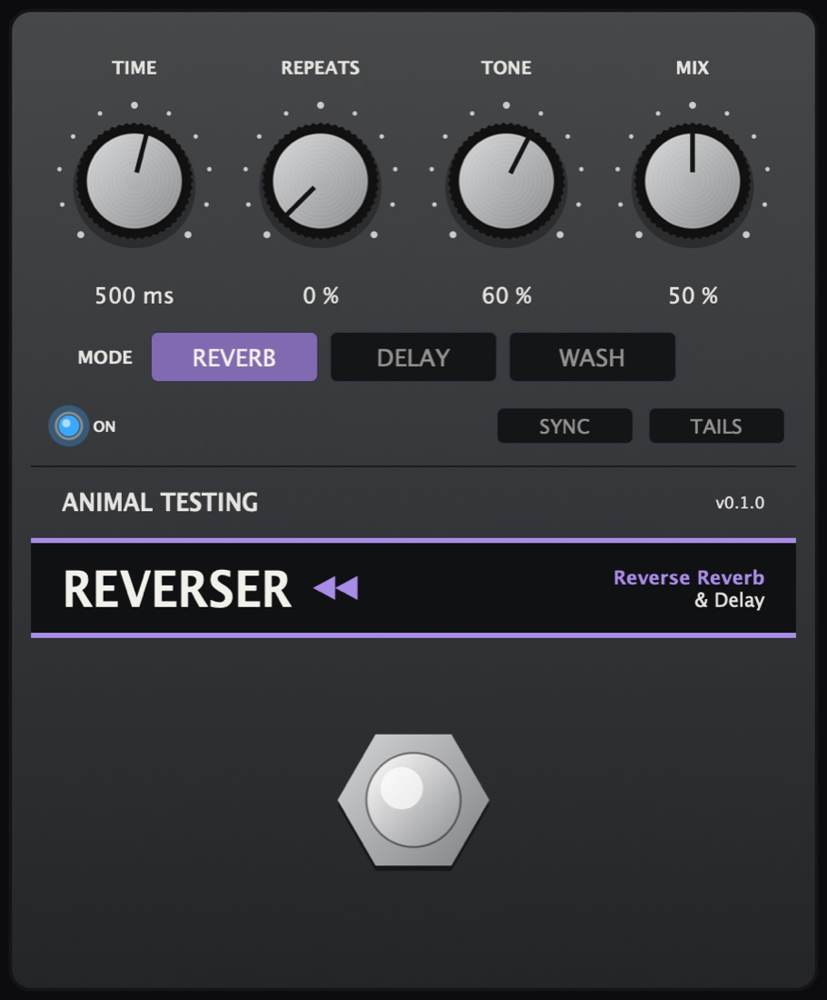

Reverser
Reverse reverb and delay inspired by the RV-7.
Everything backwards. In Reverb mode each note swells up out of nothing and stops dead. In Delay every stretch of time plays back the other way round, and Wash sends that into a long, moving hall.
- Version
- 0.1.0
- Window
- 50 ms to 2 s
- Tempo sync
- 1/32 to 1/1
- Formats
- VST3 · AU · Standalone
Controls
9 parameters| Control | Range | Default | What it does |
|---|---|---|---|
| Mode | Reverb, Delay, Wash | Reverb | Reverb swells each note up and cuts it off one window later. Delay plays each window backwards. Wash sends the reversed sound into a long hall. |
| Time | 50 ms to 2 s | 500 ms | The length of each swell or reversed phrase. |
| Sync | On / Off | Off | Takes the length from the host tempo instead. |
| Division | 1/32 to 1/1 | 1/4 | The synced length, with triplet and dotted steps. |
| Repeats | 0 to 100% | 0% | Brings the sound round again, darker each time. In Reverb as echoes of each swell; in Delay and Wash the reversed sound is fed back in, so it alternates backwards and forwards. |
| Tone | 0 to 100% | 60% | A low-pass on the wet sound, from dark to open. |
| Mix | 0 to 100% | 50% | Dry against wet. |
| Tails | On / Off | Off | With Tails on, bypassing stops new sound going in but lets whatever is playing backwards finish. |
| Bypass | On / Off | Off | The footswitch. |
How it works
Delay is a true reverse delay. A read head sweeps back through the line at twice real time, so over one window it plays the window just recorded from its end to its start. A crossfade hides the jump between windows. Each head keeps the window length it started with, so turning Time mid-sweep never bends or jumps the sound.
Wash's hall is an eight-line feedback delay network whose lines are modulated so they never move in step. It sits outside the Repeats loop, so Repeats only ever recirculates the reversed sound.
The three modes
- ReverbA burst of close echoes whose gains rise towards the end of the window, smeared by all-passes.
- DelayEach window of sound played backwards once.
- WashThe reverse delay into a long modulated hall.